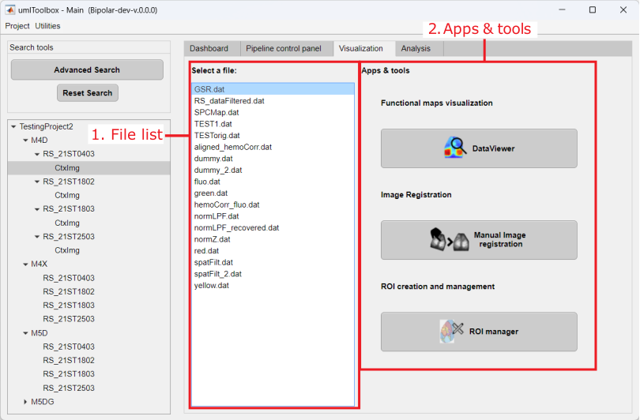

This tab provides apps and tools to visualize and manipulate imaging .dat files.

Main components of Visualization tab.
List of .dat files located in the folders of the selected objects. Select a file from the list and click on the app/tool button to open it.
This panel shows the available apps and tools that can be used to visualize and manipulate the .dat files. Here are the links for the documentation of each app/tool: